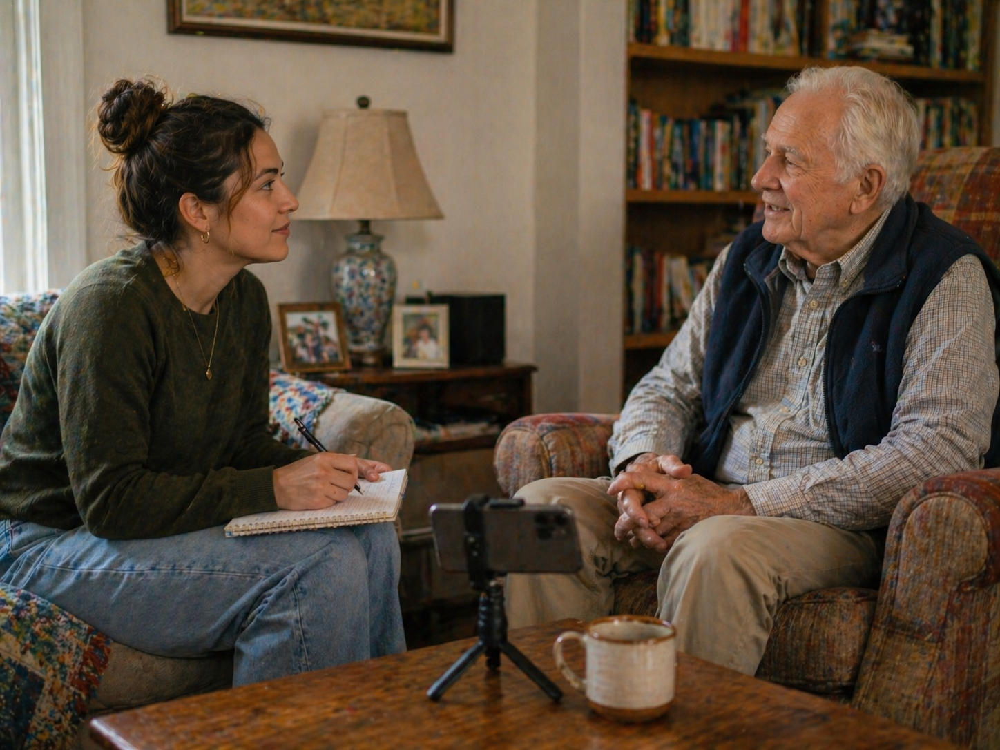
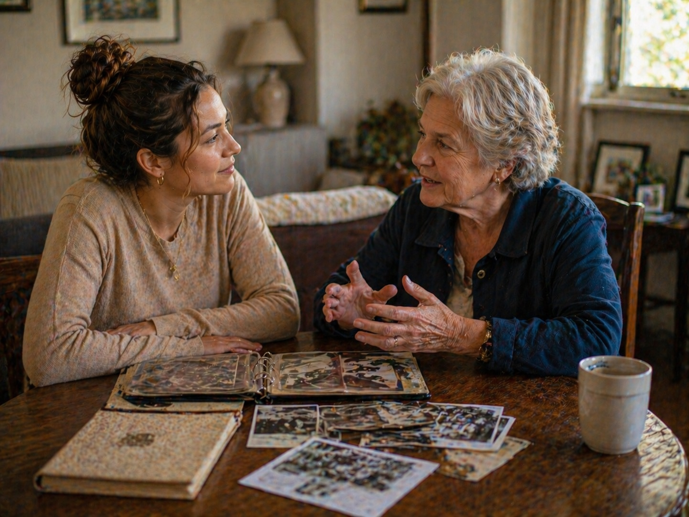
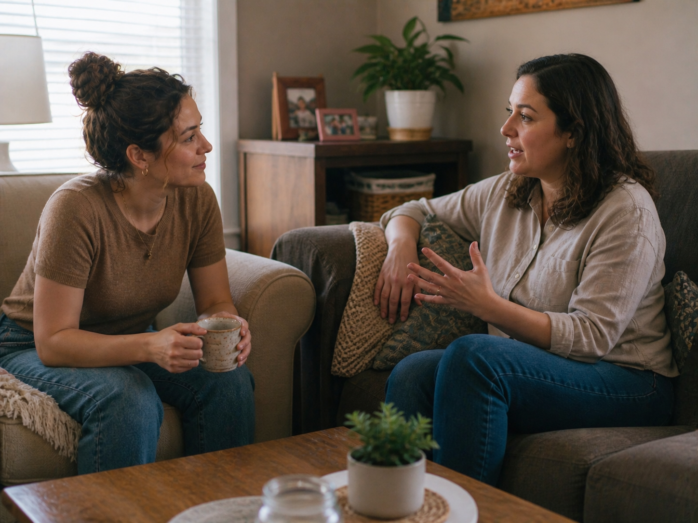
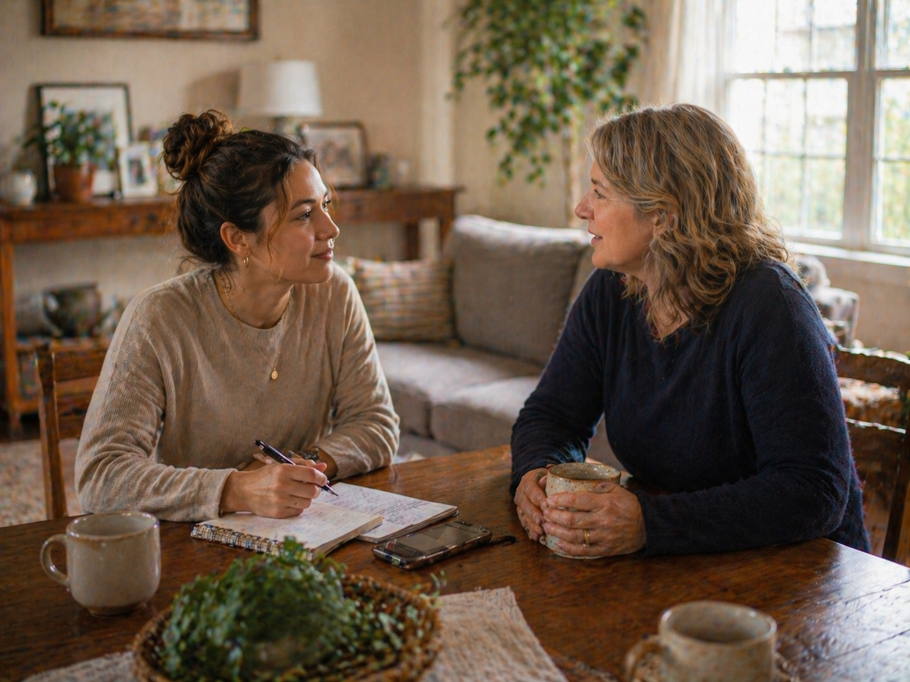

We choose the focus
We talk through what you want captured: life stories, family questions, a certain season, messages, memories, or reflections.
 Email
Email
Life Chapters
Life Chapters is a guided storytelling service where memories, moments, and meaningful parts of life are recorded, transcribed, and turned into a digital keepsake.

Why it matters
Childhood stories. Family history. Lessons learned. Funny moments. Hard seasons. What someone wants their kids or grandkids to know. These are the things families often wish they had captured sooner.
Life Chapters gives someone a calm space to talk through their life, their memories, or even the season they are in right now.
How it works
We talk through what you want captured: life stories, family questions, a certain season, messages, memories, or reflections.
I ask thoughtful questions, record the conversation, and give the person space to talk naturally without feeling rushed.
The conversations are transcribed, lightly edited, and shaped into a digital story keepsake that can be saved, shared, and returned to.
Ways to use it
Life Chapters can be used for aging loved ones, parents, grandparents, adults, families, or anyone who wants to preserve something meaningful.

Capture the stories your family keeps meaning to ask about.
Examples:

For capturing who someone is and what life feels like right now.
Examples:
Preserve stories while they can still be told in their own words.
Examples:
Pricing
Stories are better when they are not rushed. Choose a single session to start, or the full 6-month package for a more complete keepsake.
Most complete
$125/month
A 6-month storytelling package for families or individuals who want stories, memories, and voice captured with care over time.
$85
A one-time guided conversation for someone who wants to start small or capture one meaningful story, season, or memory.
+$20/visit
A lighter memory-capture option for existing Red Desert Check-In clients during regular visits.
Full package: $125/month with a 6-month minimum
Total investment: $750 over 6 months
Single session: available as a one-time starting point
Check-ins + stories
For check-in clients, Life Chapters can be added in a lighter way. During regular visits, we can capture small stories, memories, and meaningful moments over time.
This works well when someone already benefits from consistent visits and the family wants more than just a safety update.
View Check-In Pricing
Tell me what you want preserved, and we can talk through the best way to do it.